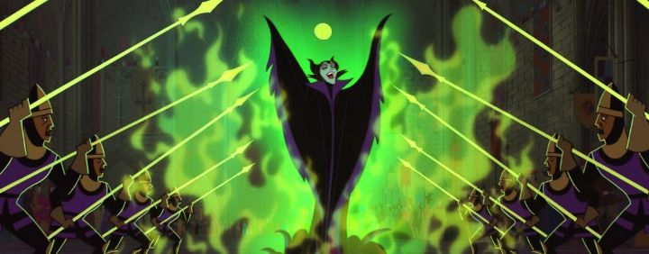

"Sleeping Beauty," released in 1959, was Disney's next big fairy-tale princess movie, and was rendered in that trendy Cinemascope wide aspect ratio for cinematic effect. For a number of reasons, it was their biggest and best yet, even though the princess story was becoming a little too familiar. In this story, the King Stefan and his Queen hold a celebration for the brith of their new daughter, the Princess Aurora. However, Maleficent, the ruler of evil, makes an entrance, and from her offense of not being invited to the gathering (or perhaps because she wanted to ruin the good cheer), she bestows a gift, a curse: on Aurora's sixteeth birthday, she would prick her finger on a sewing spinning wheel, and die. However, the three good fairies were in attendance, and were also bestowing magical gifts to the baby, and had one gift left to give. Out of instinct, to help counteract the curse (they are unable to cancel it, due to unexplained laws of this magical world), they add that the spinning whell would put Aurora to sleep, not death, and that she would be revived by True-Love's First Kiss. Still worried for the years to come, the King commands that all spinning wheels in the Kingdom be destroyed, and the faires propose a new plan: for them to raise Aurora under a new name in a cottage on the outskirts of the Kingdom, such that Maleficent couldn't find her and enact her plan. This means the fairies would be unable to use their magic in their daily lives (it would give them away), and that the King would not see her only daughter, for 16 year. It's a massive sacrifice, but is the only way. So off they go, and Aurora is raised as Briar Rose, living with her "aunts" (the fairies) in the cottage, not knowing her true heritage. When her birthday finally arrives, the Kingdom eagerly awaits her return, and prepare the pre-arranged marriage to Prince Phillip, son of a King Hubert that has long been a best friend to King Stefan. But it happens that on that day, Aurora meets a stranger that she falls in love with: she's heartbroken to learn that she is a princess and meant to marry another. Likewise, Phillip had met a stranger in the forest that day, and has no intention to proceed with the pre-arranged marriage. Neither know that they had in fact married each other, a wonderful coincidence, but this naturally puts a lot of stress on that subplot for both Kings. Meanwhile, Maleficent has not forgotten her curse, and proceeds to complete it. Prince Phillip can break it with a kiss, but Meleficient is fully aware and won't make it so easy. The story, unfortunately, has the same resolution as "Snow White" did, that a "true-love's first kiss" needed to break a spell of eternal sleep. Aurora is also, unfortunately, one of the weakest Princesses in the Disney canon, since she has so little to do other than fall in love in the story. This is much more a story about all those that work to protect her rather than about her.  On the positive side, the Disney team seemed to be aware of how the story was familiar, and worked to make this one more interesting, while acknowleging the classical nature. Prince Phillip is easily the best Prince so far, with the charm and humor of a young Harrison Ford (that humor at its best when he talks to his galliant horse). And of course, he has to be a true hero in this story, instead of simply walking up and giving a kiss: he has to escape a dungeon, escape an evil castle, and fight a dragon before he gets there. The three fairies are also a great source of comic-relief, as well as heart, acting like loving but also useless aunts without their magic, and frequently arguing with each other (especially when it comes to color choice, a recurring joke that makes the final scene all the more wonderful). Even the two Kings and their friendship to each other is a fun addition.And then there's Maleficent. Prior villains were either jealous, selfish, or greedy, but were always human. Maleficent is meant to be the encarnation and Queen of evil, and everything about her, including her voice and acting, her costume and design, and her actions all embody it perfectly. She has remained an iconic Disney villain, and due to her nature, the most powerful and evil of them all. While her character isn't particularly funny (even with dim-witted armies), there's something delicious to her role as the villain to root against. And she's clearly smart too, thinking a few steps ahead of the good guys up until she decides to transform as a very evil Dragon to stop the Prince. The art direction in "Sleeping Beauty" really stands out compared to previous Disney movies, and it would influence other medieval fantasy movies to come, like Disney's "The Sword in the Stone" and "Robin Hood." Even when the animation begins, most background characters and art look like flat medieval paintings and icons. Character designs are a bit more detailed and varied compared to previous princess movies. Maleficent's castle and her dancing minions are clearly inspired by "Fantasia's" "Night on Bald Mountain" short, the previous representation of pure evil, and it's effective to see here. And there's a lot of detailed movement and expression, remarkably smooth even in smaller scenes, like when the fairies try to sew a dress and bake a cake by hand (and then fix it by magic in an even grander display). At the time, this was the most beautful and stylized Disney film to date, and even today it holds up, despite some minor animation flaws during the later action scenes.In some ways, "Sleeping Beauty" was the grandest fairy-tale production yet by Disney, only held back due to the nagging feeling that they had traveled this route before. I can't decide which of the classic Princess movies are the best, but there's a strong case for this one, even if it's just for production values and direction alone.
- "Ani" More reviews can be found at : https://2danicritic.github.io/ Previous review: review_Sing_a_Bit_of_Harmony Next review: review_Snoopy,_Come_Home